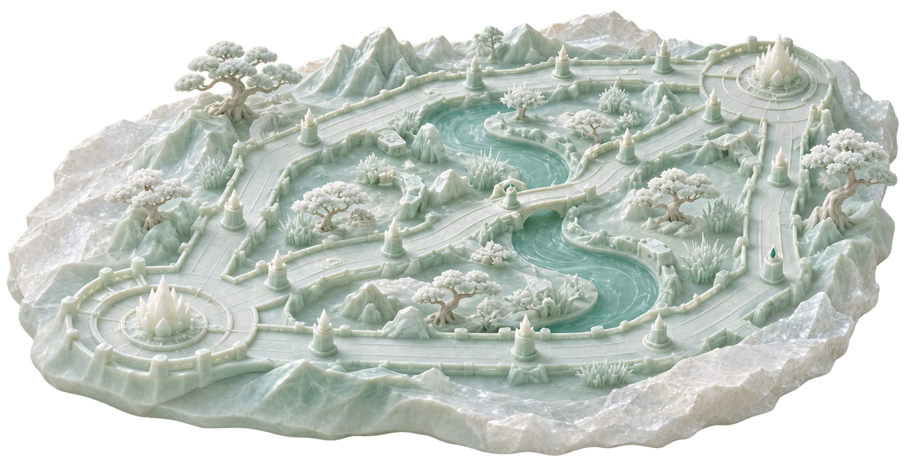

最近对局
本队示例战队蓝方
9:6胜利
对手星轨战队对方战队
本队阵容廉颇澜沈梦溪公孙离张飞
打开复盘 
赛训周期简报 · 合成示例
11-02 ~ 11-16
示例战队的 36 局记录，11 个时间点有可用经济时间轴。
点图上的点，看那一分钟的经济差。
合成示例数据，仅用于展示界面。真实战报只来自你自己的训练赛。
赛训周期简报 · 合成示例
11-02 ~ 11-16
示例战队的 36 局记录，13 个时间点有可用经济时间轴。
点图上的点，看那一分钟的经济差。
合成示例数据，仅用于展示界面。真实战报只来自你自己的训练赛。
赛训周期简报 · 合成示例
11-02 ~ 11-16
示例战队的 36 局记录，11 个时间点有可用经济时间轴。
点图上的点，看那一分钟的经济差。
合成示例数据，仅用于展示界面。真实战报只来自你自己的训练赛。